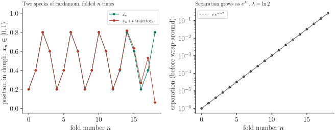

Sonpapdi Recipe Can Explain Chaos Theory
Sonpapdi is the flaky, almost cobweb-like Indian sweet that seems to dissolve into a hundred threads the moment you bite into it. If you have ever watched it being made, you would have seen the halwai stretching a slab of sugar and gram-flour dough, folding it onto itself, stretching it again, folding it again, over and over, until what started as one lump of dough turns into something with thousands of impossibly thin layers. I used to think this was just a neat kitchen trick. It turns out the same stretch-and-fold operation is the textbook mechanism behind chaos theory, and working through why gave me a much better feeling for what "chaos" actually means in physics.
Chaos, in the technical sense, is not randomness. A chaotic system is perfectly deterministic, the same input always produces the same output, and yet its long-term behaviour is practically unpredictable. The reason is sensitive dependence on initial conditions: two starting points that are arbitrarily close together end up arbitrarily far apart after enough time. The question is, what kind of operation could possibly do that to a bounded system without the points just flying off to infinity? The answer, as it turns out, is exactly what the halwai is doing with the dough.
A chaotic process making sonpapdi (or, for that matter, your physics professor's blackboard) needs three ingredients to qualify as chaotic, a definition usually credited to Devaney,
- Sensitivity to initial conditions: nearby points must eventually move apart, no matter how close they start.
- Topological mixing: any small region of the dough, given enough folds, spreads out and overlaps with every other region.
- Dense periodic points: points that return to (near) their own starting position are scattered everywhere, even though most points wander indefinitely.
Stretching a piece of dough to twice its length and then folding it back onto itself does the first two of these almost by definition: stretching separates nearby points, and folding keeps the dough from running off the table, forcing the stretched-out material back into the same bounded region where it can overlap with material from a completely different part of the original lump. This combination, stretch, then fold, then repeat, is precisely the construction behind two of the most famous objects in dynamical systems theory: the baker's map and the horseshoe map. It is not a coincidence that mathematicians who study chaotic mixing have, more than once, literally bought a taffy-pulling machine to use as a piece of laboratory equipment.
To make the connection precise without drowning in notation, it helps to shrink the problem down to its simplest possible version: a one-dimensional dough. Represent a position along the dough by a number \(x \in [0,1)\), where \(x=0\) is one end and \(x=1\) is the other. One stretch-and-fold cycle, stretch the dough to twice its length, then fold the part that fell past the far edge back on top, can be written as the map
$$ x_{n+1} = f(x_n) = 2x_n \mod 1. $$This is the famous doubling map (also called the Bernoulli map). It does exactly what the halwai's hands do: it stretches the interval \([0,1)\) by a factor of two, and the "mod 1" is the fold, anything that would have stretched past the right edge gets wrapped back to the left and stacked on top of what is already there. After \(n\) repetitions of this single rule, one fold of dough has become \(2^n\) layers, which is the same doubling you can verify by counting the visible layers in a piece of sonpapdi: a halwai doing this by hand for about ten to twelve folds, \(2^{10}=1024\) to \(2^{12}=4096\), is enough to produce the thousands of paper-thin layers the sweet is famous for.
Now place two grains of cardamom in the dough at positions \(x_0\) and \(x_0+\epsilon\), an arbitrarily tiny distance \(\epsilon\) apart. Since \(f\) simply doubles distances (before the fold wraps them around), after \(n\) folds the two grains are separated by
\begin{equation} \Delta_n \approx \epsilon \, 2^n = \epsilon \, e^{n \ln 2}. \label{eq:divergence} \end{equation}This is sensitive dependence on initial conditions, stated as a formula. No matter how finely you try to place two specks of cardamom next to each other, equation \eqref{eq:divergence} says their separation grows exponentially with the number of folds, until the fold operation wraps them back into the same finite dough and they can end up on opposite sides of the sweet. The rate of this exponential growth, \(\lambda = \ln 2 \approx 0.693\) per fold, is called the Lyapunov exponent of the map, and a positive Lyapunov exponent is the standard quantitative signature physicists use to certify that a system is chaotic. Figure 1 shows this directly: the left panel tracks two trajectories that start \(10^{-6}\) apart and stay indistinguishable for the first dozen or so folds, then suddenly diverge once the accumulated separation becomes comparable to the size of the dough itself; the right panel shows the same separation on a logarithmic scale, where the exponential growth of equation \eqref{eq:divergence} is just a straight line of slope \(\ln 2\).

Fig.1 Two nearby points under the doubling map: indistinguishable for a dozen folds, then exponentially separated, exactly the sensitivity that defines chaos.
This also quietly explains why the recipe works at all. If a pinch of saffron or cardamom were only stirred gently, it would take a very long time, and a great deal of stirring, to flavour the whole sweet evenly. But under repeated stretching and folding, equation \eqref{eq:divergence} says that any small clump of flavouring gets smeared across the entire dough exponentially fast: a dozen folds is enough to spread one localized speck over thousands of layers and, by the topological mixing property above, into contact with every other part of the dough. The same mathematics, the same doubling map, is the reason a few drops of cream mixed into coffee with a couple of stretching stirs blend faster than you would expect, and, at a much larger and more sobering scale, the reason weather forecasts stop being reliable after about two weeks: the atmosphere stretches and folds parcels of air in essentially the same way, just with a Lyapunov exponent set by the wind instead of by a halwai's hands.
None of this required any randomness anywhere, the map \(x_{n+1}=2x_n \mod 1\) is completely deterministic, you could in principle compute \(x_{100}\) exactly if you wrote down \(x_0\) to enough decimal places. The catch is that "enough decimal places" grows with \(n\): tracking the dough accurately for \(n\) folds requires knowing the initial position to about \(n\) bits of precision, since each fold doubles the effect of any uncertainty you started with. That is the real content of "chaos" as physicists use the word, it is not the absence of a deterministic rule, but the practical impossibility of using that rule to predict the far future, because errors that are too small to ever measure get stretched and folded into significance. The next time someone hands you a piece of sonpapdi, you are, in a very literal sense, holding a few dozen iterations of one of the simplest chaotic maps in mathematics.
References
[1] Strogatz, S.H., 2015. Nonlinear Dynamics and Chaos: With Applications to Physics, Biology, Chemistry, and Engineering. CRC Press.
[2] Ottino, J.M., 1989. The Kinematics of Mixing: Stretching, Chaos, and Transport. Cambridge University Press.